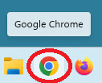
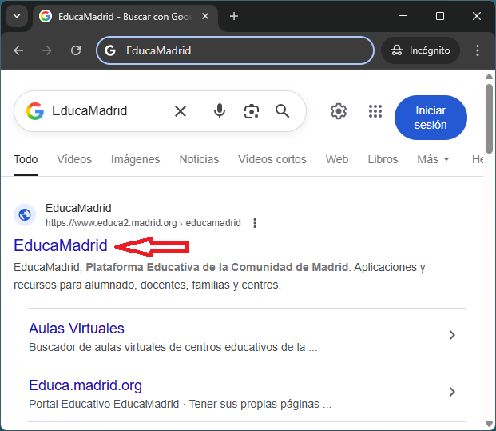
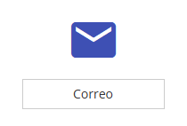
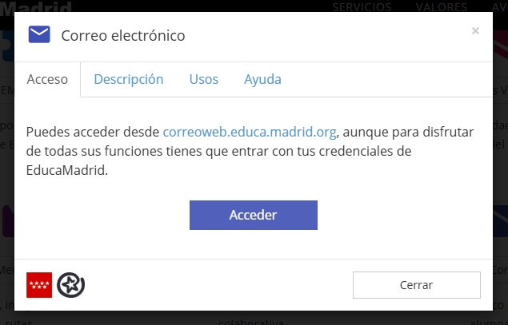
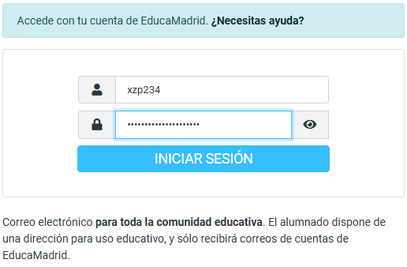
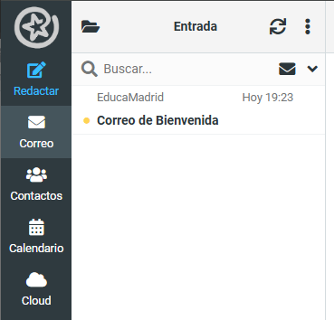
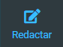
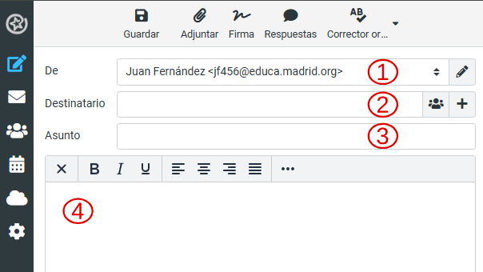
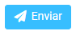
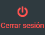

3. Enviar un correo¶
En esta práctica aprenderemos a enviar correctamente un correo electrónico o email, usando todos los campos necesarios y siguiendo las normas de etiqueta habituales.
El primer paso será abrir una sesión de incógnito del navegador Chrome.
Hacemos clic con el botón derecho del ratón en el icono del navegador Chrome:

Logo del navegador Chrome en la barra de herramientas.¶
Y, a continuación, seleccionamos "Nueva ventana de incógnito":

También podemos abrir Chrome y crear una nueva ventana de incógnito pulsando a la vez las tres teclas "Control" + "Shift" + "N".
 +
+  +
+ 
Una vez abierta la ventana de incógnito, buscamos la web de EducaMadrid en la barra de direcciones y hacemos clic en el enlace a EducaMadrid:

Dentro de la web de EducaMadrid, seleccionamos el icono "Correo":

A continuación hacemos clic sobre el botón "Acceder".

Estos pasos nos llevarán a la página de inicio del correo web de EducaMadrid: correoweb.educa.madrid.org
Ahora escribiremos nuestro nombre de usuario, nuestra contraseña y hacemos clic en "INICIAR SESIÓN" para terminar de entrar:

Una vez que entremos en el correo electrónico nos encontraremos en la bandeja de entrada, donde se pueden ver todos los correos que hemos recibido ordenados de más reciente a menos reciente.
Cada vez que hagamos clic sobre uno de los correos, este se podrá leer en la ventana de la derecha del navegador.

El siguiente paso será escribir un correo electrónico a nuestro profesor. Para poder escribir un correo debemos hacer clic sobre el icono de redactar un nuevo mensaje:

Se abrirá una nueva ventana con los siguientes campos a la izquierda:

El campo "1" es nuestra dirección de correo electrónico y se escribe automáticamente. No es necesario cambiarlo.
El campo "2" es la dirección de correo electrónico de nuestro profesor. Pregúntale cuál es y escríbelo en esa casilla.
Debe tener esta forma: nombreusuario@educa.madrid.org
El campo "3" es el asunto. En este campo escribimos una breve descripción de cuál es el asunto por el que estamos escribiendo este correo electrónico.
En esta práctica escribimos, por ejemplo: Correo de prueba - 2º ESO A
Cambiando el grupo por el tuyo de verdad.
El campo "4" es el cuerpo del mensaje en el que escribiremos algo parecido a lo que aparece a continuación, pero cambiando los textos entre corchetes por los nombres que correspondan:
Hola, [Nombre del Profesor]:
Este es un correo de prueba para demostrar que ya sé cómo escribir y enviar un correo electrónico con EducaMadrid.
Un saludo.
[Nombre y Apellido del alumno]
Tanto el "Hola" inicial terminado en dos puntos como el "Saludo" final y tu nombre en la parte inferior son normas de etiqueta digital que es importante mantener para no parecer maleducado.
Una vez escritos todos los campos del mensaje, solo tenemos que hacer clic en el icono de "Enviar" que se encuentra debajo del cuerpo del mensaje para que este se envíe.
Ten en cuenta que el correo hace una comprobación de errores de escritura y no enviará a la primera el mensaje si encuentra algún error. Será necesario corregirlos o volver a hacer clic en Enviar para que el mensaje se envíe finalmente.

Para terminar, no olvides cerrar la sesión del correo electrónico haciendo clic en el icono de "Cerrar sesión" en la parte inferior izquierda:
